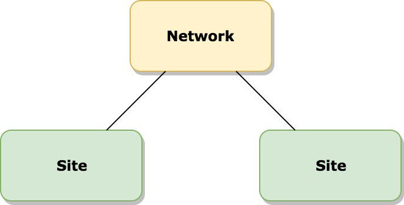

Global Admin
A Deeper Dive into Multinetwork Organization
A presentation by @felixarntz
brief introduction to multi network, what it is and the basics how it works, use cases
brief look at support by WordPress core, what works, what doesn't?
why global scope is important and how we can deal with it
Regular Setup
default setup: posts, comments, themes, plugins, users and settings
Database Schema
wp_commentmetawp_commentswp_linkswp_optionswp_postmetawp_postswp_termmetawp_termswp_term_relationshipswp_term_taxonomywp_usermetawp_users
common tables for per-site content, including meta tables for arbitrary data
somewhat special are the wp_users and wp_usermeta tables (more in a bit)
Multisite Setup (First Try)

The above is incomplete!
multisite = network
multiple sites: each one has their own set of the aforementioned database tables
additional tables for multisite organization
Database Schema
Sites
wp_commentmetawp_commentswp_linkswp_optionswp_postmetawp_postswp_termmetawp_termswp_term_relationshipswp_term_taxonomy
wp_2_commentmetawp_2_commentswp_2_linkswp_2_optionswp_2_postmetawp_2_postswp_2_termmetawp_2_termswp_2_term_relationshipswp_2_term_taxonomy
each site gets its own set of tables; all but the initial site's ones are prefixed with the site ID
wp_users and wp_usermeta are no longer site-related.example: everywhere on wordpress.org, you can log in with the same credentials
Database Schema
Network
wp_blogswp_blog_versionswp_registration_logwp_signupswp_sitemetawp_sitewp_usermetawp_users
You can have multiple networks! 😲
multisite-specific tables: wp_blog_version, wp_registration_log and wp_signups are utilities and not really important for now.
that leaves wp_blogs (for sites), wp_site (for the network definition) and wp_users (for users), plus related metadata tables
wp_users is taken over from the regular setup, now a multisite tablewp_site can store multiple networks! wp_sitemeta stores network settings, but is a metadata table!
Multinetwork Setup
On the database level, all multisite tables are actually global.
when having multiple networks, global scope becomes important to manage things that go beyond a network
users are global entities, networks are global entities; even sites are technically global entities, but they each belong to a network
Multisite Setup (Second Try)
multinetwork doesn't need to be set up like multisite; it's always there
even in a multisite setup with just the one network, there is still global scope
in a common setup, you usually don't need to worry about what is global vs what is per network, since they are essentially the same
Multinetwork Use Cases
Separate sites based on their functionality.
main network with event organizer site including database of artists, genres etc.
separate network for festival sites (similar functionality, different from main site)
third network for partner websites
Multinetwork Use Cases
Complex hierarchies with separate ownerships.
each faculty can have their own network with distinct administrators and behavior
faculties can have many sites, such as for individual classes or projects
Multinetwork Use Cases
Very custom requirements for managing large environments.
to my knowledge, wordpress.com has two networks: one for actual wordpress.com sites, and one for mirroring required data for all Jetpack sites
WordPress Core Support for Multinetwork
Available Support
database tables wp_site and wp_sitemeta
WP_Network and WP_Network_Query classesNetwork administration panels per network
WordPress Core Support for Multinetwork
Lacking Support
CUD API for networks (the R is supported)
CRUD UI for networks
user roles and capabilities that go beyond a single network
association between users and the networks they are part of
switching context to another network
link connections between network administration panels
several more trivial things are also not supported, such as having a global site count (right now there are only site counts available for each individual network)
a lot would also depend on what's considered essential for multinetwork; maybe you would wanna have globally enabled themes or globally activated plugins too
So how do I actually get to use Multinetwork?
Use WP Multi Network, the established way to expose basic multi network functionality with a UI (github.com/stuttter/wp-multi-network )
or build your own custom solution (example: github.com/washingtonstateuniversity/WSUWP-Plugin-Multiple-Networks ).
Problem: WP Multi Network is just the very basic foundation (and it probably shouldn't be more opinionated than it is), so additional tweaks are necessary
for example, having the networks overview and the ability to create new networks available in the network admin area to each network administrator probably doesn't make sense
Problem: Not every network administrator should be able to create new networks.
Goal: Handle this functionality in global scope.
This is where global scope becomes actually valid, even from a logical standpoint.
Network administrators should create sites, global administrators should create networks.
Dealing with global scope data
Two Alternatives:
Use main network as global scope layer (easy solution, but conceptual hack).
Implement missing global functionality (clean solution, but technical hack).
first approach: use WordPress as before, but store global data in main network and use main network admin as global dashboard
second approach: logical and organized approach, but deep dive into WordPress multisite necessary, work around limits in multisite behavior
decision depends on many factors like
examples for both follow
Using the main network for global scope functionality
github.com/washingtonstateuniversity/WSUWP-Plugin-Multiple-Networks Disclaimer: Most of the plugin is reusable functionality, but a few parts are still specific to the WSU environment.
global data stored as network settings (in wp_sitemeta table)
global admins are network administrators on the main network
global UI added as menu/submenu pages in the network administration panel
misuses the network administration panel, but ties in with existing WordPress functionality
really cool: it's not required to build new UI for most things; themes and plugins for example can just be activated on the network, and just a tiny bit of code is required to use these as globally activated then
the main network lists all users, other networks only list that network's users
update checks are deactivated anywhere but in the main network to essentially make that functionality global
Implementing actual global scope functionality
github.com/felixarntz/wp-global-options github.com/felixarntz/wp-global-admin (they both integrate with github.com/stuttter/wp-multi-network )
global data stored specifically as global settings (in wp_global_options table)
global admins are stored as a global setting
global UI available in entirely new global administration panel
behaves like existing WordPress functionality, but several ugly hacks required to make custom administration panel work
global dashboard widgets, global users list table, global settings page
global themes and plugins aren't supported yet as this still needs to be implemented
updates are only allowed to global administrators, but the UI hasn't been moved over to the global administration panel yet
Problem: Network administrators can see all users,
Goal: Store associations between users and their networks
right now, you would need to run a ridiculous meta query that would check for all site IDs in a network whether that user has capabilities on that site
that is obviously super slow and doesn't scale beyond just a few sites
Store associations between users and networks
Two Alternatives:
Store network IDs as user metadata (simple solution).
Store an empty capabilities array under capability keys for each network as user metadata (somewhat similar, but future-proof).
the second approach makes more sense since it also helps with another issue,
WordPress core stores a capability key for each site the user has permissions for as user metadata
that's why this approach could easily be applied for networks as well
The functionality must be hooked into the respective actions, so whenever a user is added to a site for example, they're also added to the network
Disclaimer:
The Future of Multinetwork and WordPress Core
WordPress core will never add a UI for multiple networks. This should remain plugin territory due to vast differences in how the feature is used today.
A very basic and unopinionated CRUD API will be introduced for networks, including REST API support (likely in late 2018 or 2019).
Hooks will be introduced and bugs will be fixed to improve multinetwork support where the respective plugins would wanna integrate.
Have a larger project to manage? Try Multinetwork today and help us out!
Thank you!
Felix Arntz
Plugin Developer / Core Committer / Freelancer